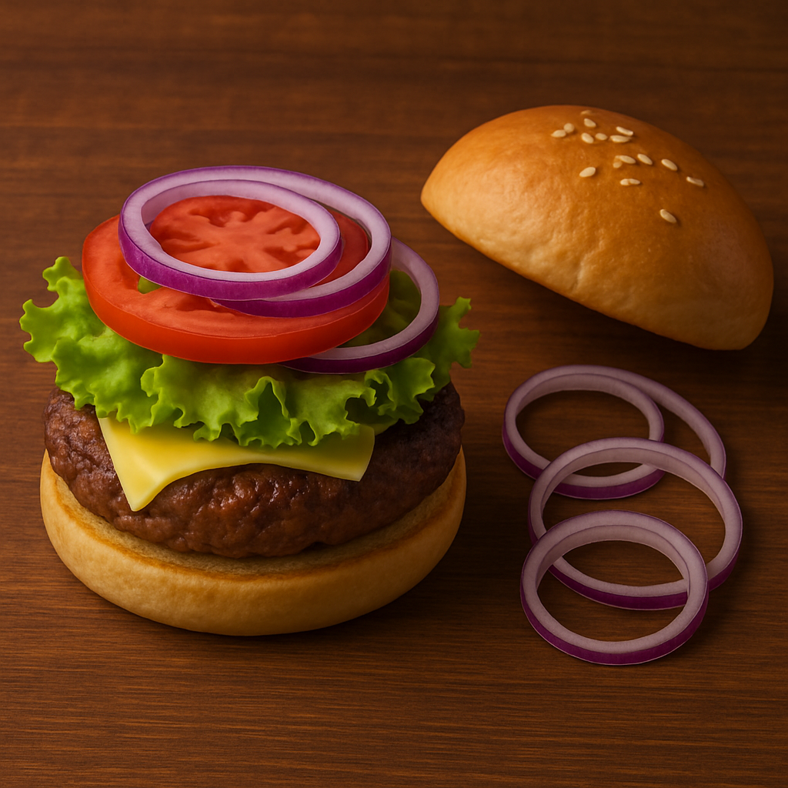

Receitas e Gastronomia
Pamonha

- 6 espigas de milho verde
- 1 xícara de açúcar
- 1/2 xícara de leite
- 1 colher (sopa) de manteiga
- 1 pitada de sal
Modo de preparo: Descasque as espigas e reserve as palhas. Rale os grãos ou bata no liquidificador com o leite até obter uma massa homogênea. Adicione o açúcar, a manteiga e o sal, misturando bem. Preencha as palhas com a massa, dobre e amarre. Cozinhe em água fervente por cerca de 1 hora. Sirva quente ou fria.
Hambúrguer Gourmet

- 1 kg de patinho moído
- 150 g de bacon triturado
- 1 ovo
- Sal e pimenta-do-reino a gosto
- Pães de hambúrguer, queijo, alface, tomate e cebola roxa para montar
Modo de preparo: Misture a carne moída, o bacon, o ovo, o sal e a pimenta até obter uma massa homogênea. Modele os hambúrgueres e grelhe em chapa quente ou asse na churrasqueira até o ponto desejado. Monte os lanches com os acompanhamentos de sua preferência.
Bolo de Fubá

- 2 xícaras de fubá
- 1 xícara de farinha de trigo
- 2 xícaras de açúcar
- 3 ovos
- 1 xícara de leite
- 1 xícara de óleo
- 1 colher (sopa) de fermento em pó
- 1 colher (sopa) de sementes de erva-doce (opcional)
- 1 pitada de sal
Modo de preparo: No liquidificador, bata os ovos, o leite, o óleo e o açúcar até obter uma mistura homogênea. Em uma tigela, misture o fubá, a farinha, o fermento, a erva-doce e o sal. Incorpore a mistura líquida aos ingredientes secos, mexendo bem. Despeje em forma untada e enfarinhada e asse em forno pré-aquecido a 180 °C por aproximadamente 40 minutos.